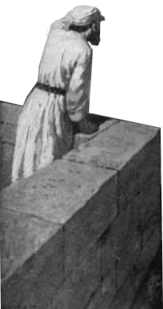

Paraphrasing, Subtext, Reflections, Images
The Book of "praises" an anthology of hymns (songs) that contains many praises and supplications to God.
There are references to other books of the Bible formatted as subtext.
Some of these writtings are written after Davids time.
The references used are still relevant because these prophets and authors/scribes were inspired by the Holy Spirit and written for mankind through out all time.
2 Timothy 3:16–17 (Spirit inspired), 2 Peter 1:20–21 (Spirit inspired), Isaiah 40:8 (timelessness)
What this means is David might teach the reader about something that isn't fully realized and/or completed until a later time by other inspired prophets.
This validates referencing books from other authors after Davids time.
The Way of the Righteous and the Wicked
[1] Blessed is the man
who walks not in the counsel of the wicked,
nor stands in the way of sinners,
nor sits in the seat of scoffers;
[2] but his delight is in the law of the LORD,
and on his law he meditates day and night.
[3] He is like a tree
planted by streams of water
that yields its fruit in its season,
and its leaf does not wither.
In all that he does, he prospers.
[4] The wicked are not so, but are like chaff that the wind drives away.
[5] Therefore the wicked will not stand in the judgment,
nor sinners in the congregation of the righteous;
[6] for the LORD knows the way of the righteous,
but the way of the wicked will perish.
(ESV)
Blessed Person
A person is blessed when they are properly in alignment with God by the means of receiving and accepting the Lord's promises.
The Lord's promises to ancient Isrealites
These promises were fullfilled. This gives us insight into the Lords trustworthiness.
Also noteworthy is that the Lord has not promised Christians any sort of visions in dreams or signs. This is a dangerous way to place our faith because if those signs or visions do not reveal themselves to a Christian or they portray something other than the Word of God it can lead us astray. I have seen this sort of doctrine in non denominational, baptist, and pentecostal Christians.
It is important to place our faith on the promises the Lord gives us Christians: most importantly salvation made true in the blood of Christ Jesus
The Lord's promises to Christians
Receiving and accepting the Lord's promises:
The person is made full and does not need anything else in their life.
The person in a state of fullness lives a lifestyle not participating in sinful environments, but instead looks to the Lord's Law for instructions on how to live life.
The person desires the Law of the Lord and keeps it in his mind and heart. By doing this the person's body is made alive and able to give life to other people.
This state of blessedness is resilient and will not fail. The person will prosper unlike unbelievers/unfaithful people.
When God's justice is applied the unfaithful will not be able to defend themselves and will be seperated from the Lord eternally.
The faithful and blessed person will be defended, justified and live eternally with God by the saving sacrifice made by Jesus Christ.
David addresses the Lord:
Why are foreign nations so uncontrollably angry and making plans. While doing this they view themselves in such a high regard. The kings and rulers of the earth are taking political positions and establishing plans against the Lord and against His chosen servants and executives saying, "Let us get rid of the Mosaic Laws or ten commandments, and the Lords chosen servants and executives." David addresses this political movement: It is impossible for these people to overthrow the Lord of the universe. The Lord will address the rebels and put them in their place, saying “I have chosen a king and a location to rule from.” The Lord set the boundaries by what is to be and it is this: “You (David) are my son, I have made you king of the land and nations. Ask me (the Lord) and I will give you (David) rule over all the nations as a permanent possession along with everything else on the earth. Also all of the opposing nations will be destroyed by you (David).”
David addresses all nations:
Pay attention and listen up rulers and kinds of all nations: be careful of what you do next. Follow this instruction: worship the Lord of the universe YWHW in awe, fearfulness, and reverence. Let this worshiping bring you joy. Then make peace, align and be loyal to the Lords appointed king (David). If you do not do this the Lord will be angry and separate you from Himself. The Lords becomes angry quickly. The people who do trust and follow the instructions of the Lord will be in proper alignment and not need anything else in this world.
Absolam who is David's son who is now king of Isreal is building his army and names his father David an enemy. Absolam and his people say the David will not be protected by God or saved by Him. (Most likely because of what David did to Uriah). David says: But You oh Lord, are protecting me and keeping my status of king as vindicated. I (David) called to the Lord, and He answered me from Mount Zion.
Mount Zion in the time of David:
The Lord supports me (David) when I am asleep. I will not be afraid of the thousands who have set their vengeance towards me everywhere. Rise up, O Lord! And give me freedom. Striking down the wicked is what You do! Saving and possessing is what you do! You bless your people!
Answer me when I call to You, God of my righteousness. In the past when I have been in distress, You have given me relief. Have mercy on me and hear my prayer.
[alt] Fellow humans, how long will you slander me and attack my reputation? How long will you love worthless schemes and pursue the lie that you can succeed against God's anointed?
David is under attack (slander, opposition, possibly military threat). His enemies are spreading lies about him. They're trusting in their own plans rather than recognizing David as God's chosen. David contrasts their pursuit of "worthless lies" with his own trust in God's righteousness. He's confident God will vindicate him because of past faithfulness.
David addresses his enemies:
Be shaken [by what I've said], but don't let it drive you to sin. Instead, reflect deeply in your heart when you lie down tonight, and then be still [before God].
David is essentially saying:
"My rebuke should shake you up - good! Let it disturb you. But instead of reacting defensively or angrily against me, take that emotional energy and turn it inward. Tonight, when you're alone with your thoughts, honestly examine your heart. Ask yourself: 'Am I really in the right here? Am I pursuing lies? Am I opposing God's will?' And after you've searched your heart, be quiet before God. Don't rush to defend yourself or plot your next move. Just be still.
Apostle Paul quotes verse 3: "Be angry and do not sin; do not let the sun go down on your anger, and give no opportunity to the devil."
Paul's application: Adds urgency, deal with it quickly (don't let sun go down), Makes spiritual warfare explicit (don't give the devil a foothold), Same principle: anger itself isn't sin, but unresolved/misdirected anger leads to sin
Offer right sacrifices [worship God sincerely from a repentant heart] and put your trust in the LORD [instead of pursuing your worthless plans].
David is essentially saying:
You've been attacking me based on lies, trusting in your own schemes. STOP. Instead, come back to God genuinely - not with empty rituals, but with repentant hearts and right living. Stop trusting in your ability to succeed against God's plan. Trust in the LORD instead.Explicit personal paraphrase with subtext:
People are asking, 'Who will show us good?' [whether in cynicism or desperation]. LORD, I'm answering that question with a prayer: Lift up the light of Your face upon us - for Your favor alone is the source of all true good. LORD! We need YOUR favor, YOUR presence, YOUR blessing.
David is essentially saying:
"Many people around me are asking in [discouragement or cynicism], 'Who can show us any good? Where will blessing and prosperity come from?' But LORD, I know the answer to their question - it's found only in You. Please lift up the light of Your face upon us - let Your favor shine on us, for Your presence and blessing are the only true good we need."
Connections:
2 Corinthians 4:6
"For God, who said, 'Let light shine out of darkness,' has shone in our hearts to give the light of the knowledge of the glory of God in the face of Jesus Christ." In Christ, we see "the light of God's face", Jesus is the full revelation of God's favor, through Christ, God's face shines on us permanently.
John 1:14
"And the Word became flesh and dwelt among us, and we have seen his glory, glory as of the only Son from the Father, full of grace and truth." The glory we "see" in Jesus = the "light of God's face" David prayed for
Matthew 5:16
"Let your light shine before others, so that they may see your good works and give glory to your Father who is in heaven."Believers now reflect the light of God's face to the world
Prayer:
Be near to me Lord. Bless us and hold us in your favor. Guide us and show us the path to the light who is Jesus Christ. Bring us joy and gladness. Deliver us from this body of sin and shine your face upon us.
I (David) may not have material abundance, I may be going through hardship, BUT I have something better, God's favor brings deeper, greater joy than wealth ever could. My enemies (persecutors and anyone whose joy depends on circumstances rather than God) joy depends on external circumstances which are temporary (grain, wine – harvest, festivals). My joy is deeper and greater than my enemies joy. My deep joy comes from Your presence and knowing Your favor is in me as king of Israel.
Even when they're at their happiest moment - celebrating an abundant harvest with plenty of food and wine - my joy in You surpasses theirs. Because my joy doesn't depend on circumstances. My joy comes from You and surpasses anything material prosperity could bring.
Spiritual joy > material joy
God's presence > God's presents
Being WITH God > having things FROM God
Knowing Him > knowing abundance
Although David is being sought out to be killed David is at ease.
In peace I will both lie down and sleep, for you alone, O LORD, make me dwell in safety. This is remarkable - he's not saying "I'll stay up on guard" or "I'll sleep lightly with one eye open". David trust the Lord to protect him completely because GOD ALONE makes him secure. David has inner tranquility and is not tossing and turning in his sleep.
Radical trust
David is at ease and falls asleep, even though his enemies are seeking to take his life. David is actually in danger of being killed. Yet he falls asleep and has complete inner peace because he radically trust in the Lord. David trust the Lord when He told David that he is to be king. David trust the Lord to keep him secure and safe.
A person ought not to trust in himself to fix all of his problems or fix the world. A person is only a sinful broken being. Everything comes from God even sleep itself. Look to Jesus as the solution to all of my affliction.
Apostle Paul teaches similiarly:
"Do not be anxious about anything, but in everything by prayer and supplication with thanksgiving let your requests be made known to God.""And the peace of God, which surpasses all understanding, will guard your hearts and your minds in Christ Jesus."
Philippians 4:6-7
Jesus Sleeping in the Storm
"And behold, there arose a great storm on the sea, so that the boat was being swamped by the waves; but he was asleep."When they wake Him: "Why are you afraid, O you of little faith?" (v. 26)
Matthew 8:23-27
Question for us:
Can you sleep in the storm?
Can you rest when enemies surround you?
Can you lie down in peace when circumstances scream danger?
If not, why not?
Do you trust God + something else? (not "alone")
Are you trying to secure yourself? (not letting God "make you dwell")
Are you looking for peace in circumstances? (not "in the LORD")
Blessing: God gives us a framework on to walk through life
Prayer for sleep:
Although everything is not fine in my life, I might be in danger, I have not solved all of my problems, I am not in a safe place.
I look to You Lord to keep me secure made true and possible through Jesus’ atoning blood for my salvation. I trust You Lord enough to sleep knowing I am in Your loving care and favor.
Your salvation is sufficient. I rest in your care and not my own this night.
Tidbit:
The only time the Bible records Jesus sleeping was during the storm on the boat.
From Distress to Peace
The progression:
From anxiety to shalom - through trust in God alone
To the choirmaster: for the flutes. A Psalm of David. Wind instruments like the flute might have been chosen to accompany this psalm because they sound like groaning/sighing, which match David's internal groaning. Give ear to my words, O LORD; consider my groaning. ESV
Examples: Anguish too deep for words, longing that defies description, pain that comes out as groans, meditation that is more than thought Daving teaches that God hears BOTH levels. God hears what we sometimes cannot say clearly. God understands inarticulation. God percieves the heart behind inadequate words. God does not require perfect eloquence. Groaning is a valid form of prayer.
Prayer is sometimes beyond words. Permission to pray imperfectly. God wants honest faith. God invites human beings to honest & raw in prayer. That might just mean your prayer will be multilayered.
Apostle Paul teaches us in the book of Romans that the Holy Spirit helps us translate and pray the groanings too deep for words:
"Likewise the Spirit helps us in our weakness. For we do not know what to pray for as we ought, but the Spirit himself intercedes for us with groanings too deep for words. And he who searches hearts knows what is the mind of the Spirit, because the Spirit intercedes for the saints according to the will of God." Human beings are limited so that we can't always express what we feel because the pain might be too great, desire too intense, need too deep, confusion too complex. The emotions that we feel sometimes overwhelm us to the point we cannot put our words together.
Romans 8:26-27
Examples: You're so overwhelmed you just sit in God's presence and... sigh. You're in such pain you can only weep and groan. You're so confused you can't even form a coherent request. You're so desperate words feel inadequate.
David shows:
Give attention to the sound of my cry, שַׁוַע (shava)
my King and my God,
for to you do I pray.
David is escalating - from calm words → to groaning → to CRYING OUT
שַׁוַע (shava): Desperation , Urgent need , Danger or distress , Loud, vocal outcry (not silent prayer), Call for rescue/deliverance , Life-or-death intensity
This is NOT casual prayer - it's DISTRESS
my King and my God:
Addressing God as King indicates that although David is to be an earthly King, David also has a King who has authority and power.
Not just "God" (distant, general) but “my God” (personal, covenant relationship)
Covenant relationship:
Promises made to David and the Isrealites. Partner type of relationship. Trust was built over time and God kept His promises.
Jesus addresses God as “my God” when on the cross and truly abandoned, unlike David and all other people. Matthew 27:45
Even when Jesus was truly abandoned He address God as “my God” to appeal to Gods promises. People ought to appeal to Gods promises and be comforted because we are not abandoned.
KING = Power, Authority, Protection, Resources
GOD = Personal Relationship, Covenant, Devotion
Davids logic:
I state the facts and address God as Lord and King. Therefore God ought to attend to my prayer.
Side note:
using facts and Gods instruction while honoring God and making appeals to God have overlap with worshiping God.
David appeals to God (2/2)
For to You I Pray - כִּי־אֵלֶיךָ אֶתְפַּלָּל
The reason David prays to God:
Looking forward to Psalm 5, Verse 4 "BECAUSE You are not a God who delights in wickedness"
Reasons continued...
Other gods/idols might tolerate evil, be indifferent to wickedness, or even promote it, but Yahweh is fundamentally opposed to evil.
Therefore David brings his case to the God who hates wickedness, who will judge evil, who cannot coexist with wrongdoing, who will act against the wicked.
David is making the case:
I'm not going to anyone else, I'm directing my prayer to You, you are my King and my God. Therefore, You should listen. Attend to me and please respond.
It’s also a fact that David is stating.
David’s prayer has overlap with worshiping God.
Verse 2:
הַאֲזִינָה (ha'azinah) - "Give ear" (careful attention)
בִּינָה (binah) - "Consider/understand" (perceive deeply)
הַקְשִׁיבָה (hakshivah) - "Attend" (focus intently)
David is piling up synonyms to emphasize: "I NEED YOU TO HEAR ME!"
Jesus offers up prayers and supplication, with loud cries and tears. Jesus was heard by God due to His reverence.
David Is Teaching Us: Three-Level Prayer Model
Level 1: WORDS (v. 2a) What we can articulate clearly, Specific requests , Coherent thoughts
Level 2: GROANING (v. 2b) What's beneath the words, Too deep to express clearly Sighs, meditations, longings
Level 3: CRYING OUT (v. 3) Desperate, urgent, vocal, "HELP! SAVE ME! PLEASE!", Raw emotion, unfiltered need
All three are valid prayer. God hears all three.
Verse 3
O LORD, in the morning you hear my voice;
in the morning I prepare a sacrifice for you and watch.(ESV)
I prepare a sacrifice...
Although the ESV version uses the word sacrafice it is likely David was preparing and treating his prayer like a sacrafice on the altar.
Romans 12:1, Hebrews 13:15
David did this by ordering it formally and carefully according to God's requirments.
David uses these words to describe how he arrange his prayer:
אֶעֱרָךְ־לְךָ (e'erokh-lekha) - "I will arrange/set in order to You"
The root word: עָרַךְ (arakh) was used in three ways in scripture:
...for you and watch.
"Watch/Wait" - וַאֲצַפֶּה (Va'atzappeh)
Root: צָפָה (tzafah) = to watch, look out, spy, keep watch
Isaiah 21:6-8 (watchman on the tower), Habakkuk 2:1, Micah 7:7, 2 Kings 9:17
David uses a watchman as an image to describe himself while waiting.
This means that he will remain vigilant, patient while expecting someone/something.

David mentions the morning twice.
Isrealite priest would offer sacrafices according to a daily pattern.
The pattern was morning and evening/twilight.
Exodus 29:38-42, Leviticus 6:12, Numbers 28:4
Again David is treating his prayer like a sacrafice on the altar.
Morning might be emphasized by David because of other connections.
Side notes
Verse 4
For you are not a God who delights in wickedness;
evil may not dwell with you.(ESV)
כִּי (ki) - "For, because" You (God) are...
לֹא (lo) - "Not"
אֵל־חָפֵץ (el-chafetz) - "A God who delights/takes pleasure" in...
רֶשַׁע (resha) - "Wickedness, wrongdoing, evil": Moral corruption, injustice, violence
רָע (ra) - "Evil, evil person, evildoer"
לֹא יְגֻרְךָ (lo y'gurkha) - "May not dwell with / will not sojourn with": cannot coexist with...
אָתָּה (attah) - "You" (God)
David speaks about God's charecter: God Does NOT Delight in Evil
Both Resha and Ra are mentioned
רֶשַׁע (Resha) - "Wickedness"
An abstract concept: Moral corruption, Wrongdoing, Active evil, Injustice
רָע (Ra) - "Evil/Evil person"
Can be abstract (evil) or concrete (the evil person/evildoer), The one who practices wickedness, Wickedness personified
Together they cover: the principle of wickedness itself and the practitioner as wickendness personified
Neither the principle of evil nor the evil person can dwell with God.
evil may not dwell...
יְגֻרְךָ (Y'gurkha) - Dwell
Root גּוּר (gur): to dwell, sojourn, stay, lodge, be a guest
Evil isn't even briefly allowed to coexist with God.
Psalm 15:1-2, Psalm 24:3-4, Habakkuk 1:13, Isaiah 59:2, Revelation 21:27
God and Evil are completely incompatable.
כִּי - "For/Because"
Davids reasoning for praying to God: God and Evil are incompatable
Reasons continued...
The way David talks about the Lord shows God's nature which is Holy (completely seprate from evil), morally pure, introlerable to wickedness (sin).
Isaiah 6:3, Leviticus 11:44, 1 John 1:5
God's nature demands acting towards evil and David appeals to this fact.
At this point David has completed making his case on why he is coming to the Lord.
This is THE central problem the Bible addresses!
During Davids time (Old Testament) this meant making sacrifices and atonement: Levitical system provided temporary covering, Blood sacrifice substituted for the sinner, Ritual cleansing allowed approach to God
Leviticus 17:11
There was also covenant relationship during OT times with God's people where God bound Himself to His people.
The Lord was gracious and provided forgivness to His people.
David trusted in God's covenant mercy.
Psalm 51:1
Lastly in OT times God required a repentant heart (transformation).
Psalm 51:16-17
During our time (modern day) as sinful people we are able to approach God through the perfect sacrafice Jesus Christ.
Hebrews 10:10-14, Corinthians 5:21
This Perfect Sacrafice justifies us sinful people who are faithfull in God.
Romans 5:1, Romans 8:1
Modern day followers of God (Christians) are in a tranformative state of being made sinless and pure through Christ's sacraficial atonment. Always pure, yet always sinning.
Philippians 3:9
Looking forward
David is confident trusting the Lord (faithfullness). And in his faith David is about to complain about wicked people in verses 5-10.
In verse 10 David will then ask God to judge the wicked people and talk about the contrast of the righteous (himself) and wicked people.